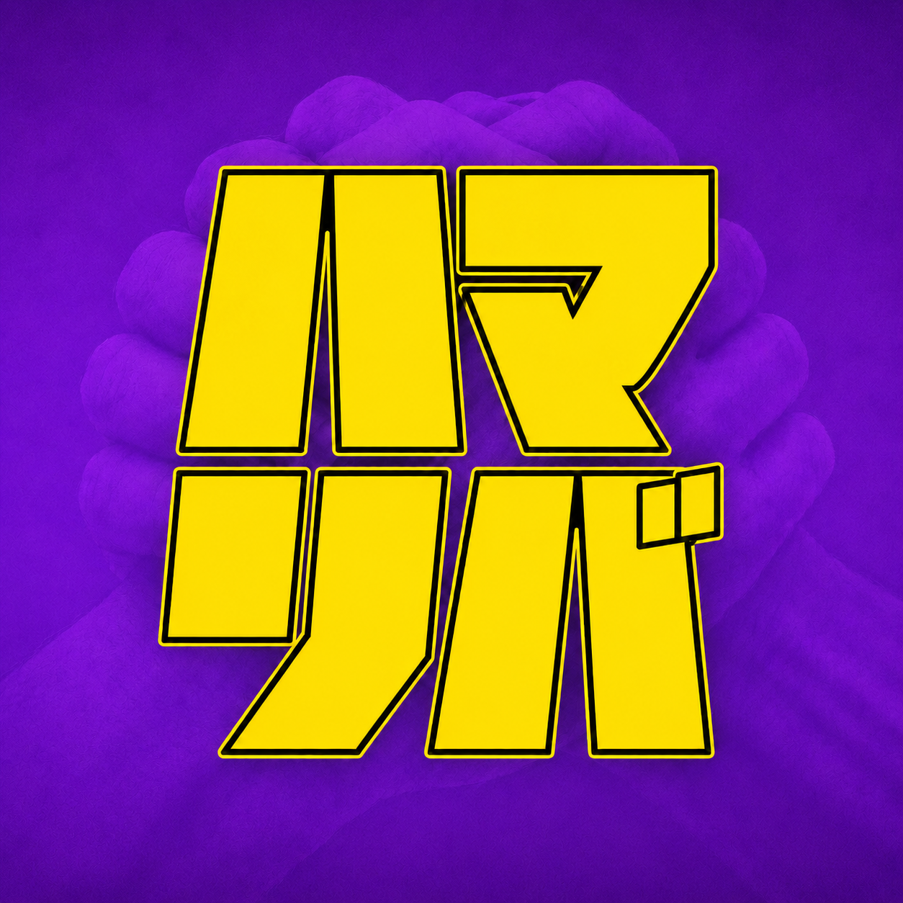

ハマリバ「このままで終わりたくない」20代へ。
3分の診断で、自分に向いてる仕事がわかる。
※求職者の方は完全無料です（公式LINEから）
評価も給料も、ずっと横ばい。努力の置き場所が分からない。
履歴書を書くたびに、ちょっと気が重くなる。
5年後の自分が想像できない。モヤモヤが消えない。
やりたいことが見つからないまま、時間だけが過ぎる。
追加は無料。しつこい連絡はしません。
3分・スマホ完結。直感でOK。
あなたの向いてる仕事がわかる。
あなたに向いてる仕事、ごまかさず正直に出します。
D太さん24歳・元Bar店員
夜の仕事から、未経験で反響営業へ。収入も生活も、まるごと変わった。
E子さん28歳・派遣を転々
「職歴に自信がない」から一歩。未経験で営業に挑戦して、初めての正社員に。
B子さん30歳・元看護師
体を大事にしながら働きたい。未経験で営業事務へキャリアチェンジ。
※個人の実績です。成果には個人差があります。
言いにくいことも、あなたのために言う。最後まで一緒に考える。
とりあえず紹介、はしない。その人に合う環境を一人ひとり本気で。
うまくいかないのは能力じゃなく、環境が合ってないだけかもしれない。